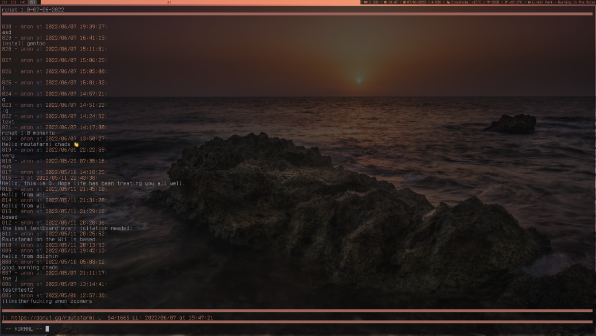

rchat is a command-line rautafarmi instance client with Vim keybinds written in Bash. (also works in zsh)
It is very customizable and is customized through editing with an editor.
rchat was designed with Vim keybinds in mind. To enter a message, you use Insert mode and Vim keybinds to navigate.
rchat has support for fancy colors. If you wanna change the colors it's really easy to do.
"In addition to simply entering text, you can do :e and write text in your defined $EDITOR.
rchat has integration with xshbar plugins. This means you can get messages on your status bar.
rchat supports multiple instances including custom ones. Simply add one.
rchat logs all messages in /tmp/rchat-history. This combines messages across multiple instances.
rchat is written in Bash, making it easy to configure with any editor. If the default features aren't enough, you can download and patch in patches that you can find below..
To install rchat, If you run Arch Linux or any distributions based on it, you can simply get it from the AUR (although it may be slightly outdated). Package is maintained by nezbednik and as of 0.4, is fully up-to-date. If you use 'yay', run 'yay -S rchat'. Then you can just begin using it.
If you run Gentoo Linux, you can add my overlay using layman and then just emerge it. The ebuild is maintained by me so it should be up-to-date.
I recommend installing it by cloning the repository.
cd ~
git clone https://github.com/speediegq/rchat
cd rchat
make install
See Installation, then simply run it in a terminal. To join the default instance, simply type ':j'.
To set a different instance, type ':set instance' and then enter your instance. If the instance is invalid or you wanna set it back, type ':set instance default'.
From here, you can read the documentation by typing ':help'.
rchat doesn't come with features I believe a lot of people won't use. If you need more, you can use the GNU 'patch' command with one of these .diff files below.
This patch enables .Xresources support for rchat. It allows setting the following values:
If you use rchat 0.5, use the 0.5 patch.
If you use rchat 1.0 or 1.1, use the 1.0 patch.
Simply apply as usual.

This patch enables support for notifications in rchat using 'notify-send'. Make sure to install 'libnotify-send' before using.
This patch adds a ':open' feature which opens the last URL displayed in your terminal.
Really simple, but also extremely useful if you want to view links quickly.
1.1 version likely compatible with 1.0!
This patch adds support for art in rchat that runs before you join an instance. The art is placed in $HOME/.config/rchat/rchat_art and will run if present. The file can contain ANSI escape codes if you want colors.
This patch replaces the ANSI escape codes with tput commands. This allows for more colors and also allows you to separate your rchat color scheme from your terminal color scheme (Useful if you use Pywal).